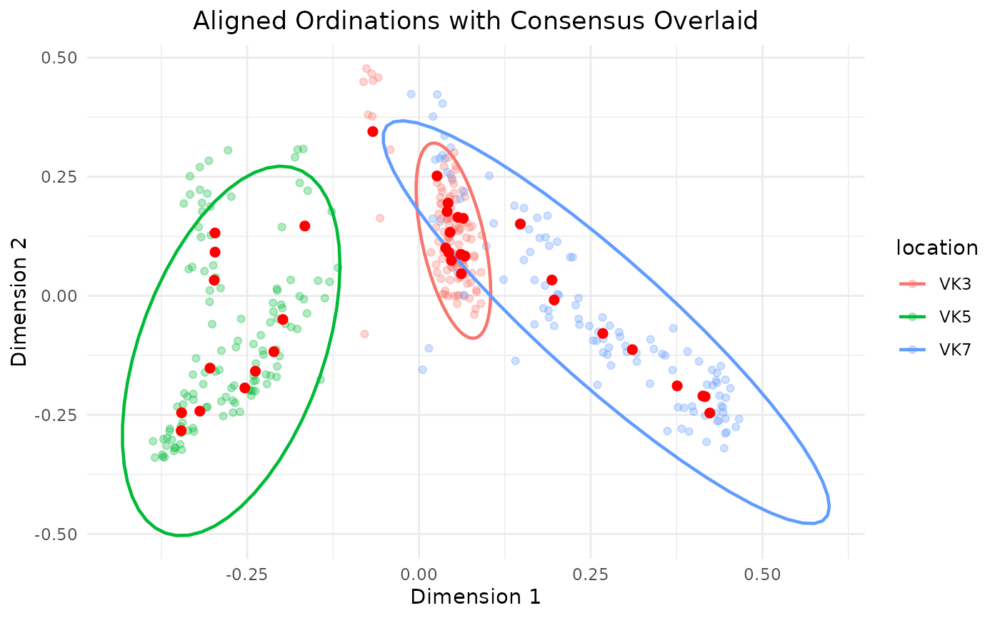
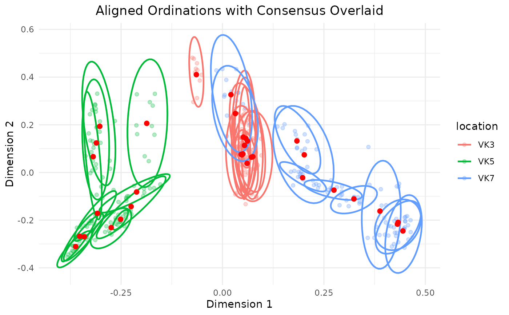

Perform repeated rarefaction
repeated_rarefaction.RdThis function performs repeated rarefaction on a phyloseq object,
computes ordination, and generates a PCoA-based visualization.
The same procedure is used from threshold_testing function when testing
a range of thresholds.
Usage
repeated_rarefaction(
input,
repeats = 50,
threshold = 250,
colorb = "sample_id",
group = "sample_id",
cloud = TRUE,
ellipse = FALSE,
cores = 2,
...
)Arguments
- input
A
phyloseqobject.- repeats
An integer. The number of times to repeat rarefaction. A value of 1 means no repeats. If too few repeats are selected it would be not possible to draw an ellipse around the group.
- threshold
An integer. The threshold value to use for rarefaction.
- colorb
A string. Column name in
sample_data(). Used to color sample points.- group
A string. Column name in
sample_data(). Used to group the samples. The parameter is also used to draw an ellipse around the points.- cloud
A boolean. If
TRUE, all the data points generated from repetitions are shown. Otherwise, only the median points of each sample repetition cloud are plotted.- ellipse
A boolean. If
TRUE, confidence ellipses around sample groups are drawn.- cores
An integer. Number of cores to use for parallel processing.
- ...
Additional arguments are reserved to internal use.
Value
A list containing (While also showing the plot directly):
repeats: Number of repeats.df_consensus_coordinates: A data frame with coordinates of the median points of the sample clouds.df_all: A data frame of coordinates ordered by ordination number, along with metatata.plot: aggplotobject.
Examples
library(Sibyl)
# Running this with cloud = TRUE and ellipse = TRUE will generate a plot
# where the samples belonging to the same group will be colored similarly
# and an ellipse will be drawn around the group.
repeated_rarefaction(adults,
repeats = 10,
threshold = 250,
group = "location",
colorb = "location",
cloud = TRUE,
ellipse = TRUE)

# We can run the function to highlight the spread of the single sample clouds
# too, setting the groupb parameter to the sample_id.
repeated_rarefaction(adults,
repeats = 10,
threshold = 250,
group = "sample_id",
colorb = "location",
cloud = TRUE,
ellipse = TRUE)
#> Warning: Probable convergence failure
